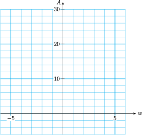

Section 6.3 Solving Quadratic Equations by Factoring
¶Subsection The Zero-Factor Principle
In Section 6.2 we applied the Zero-Factor Principle to solve quadratic equations of the form . For reference, here is the statement of the Zero-Factor Principle.
Zero-Factor Principle.
If the product of two numbers is zero, then one (or both) of the numbers must be zero. Using symbols,
In order to solve more general quadratic equations, of the form we will need to factor quadratic trinomials. Here is an example of how we can use the principle to solve a quadratic equation.
Example 6.13.
- Compute the product \(~(x+5)(x-4).\)
- Solve the equation \(~x^2+x-20=0.\)
- We use the FOIL method to apply the distributive law to the product.
- From part (a) we see that \(~x^2+x-20\) can also be written in factored form as \(~(x+5)(x-4)\text{.}\) Thus, the equation \(~x^2+x-20\) is equivalent to\begin{equation*} (x+5)(x-4)=0 \end{equation*}We can apply the Zero-Factor Principle to this equation: If the product is zero, then one of the factors must be zero. Thus, either\begin{equation*} x+5=0~~~~\text{or}~~~~x-4=0 \end{equation*}This means that either \(x=-5\) or \(x=4\text{.}\) These are the solutions of the equation, as we verify below.\begin{align*} \blert{\text{Check:}}~~\amp \text{Substitute each value into the original equation.}\\ \amp x=\alert{-5}:~~~~~~ (\alert{-5})^2+(\alert{-5})-20=25-5-20=0\\ \amp x=\alert{4}: ~~~~~~~~~~ (\alert{4})^2+(\alert{4})-20=25-5-20=0 \end{align*}
Subsubsection Reading Questions
1.
Why can't we solve the equation \(~x^2+x-20=0\) in Example 1 by extraction of roots?
Subsection Factoring Quadratic Trinomials
In Section 6.2 we learned to factor quadratic expressions of the form \(ax^2+bx\text{.}\) Now we consider quadratic trinomials of the form \(x^2+bx+c\text{.}\) Many of these can be factored into the product of two binomials. For example,
How can we come up with the factors of the quadratic trinomial? Let's recall how the product is obtained. We apply the distributive law and multiply each term of the first binomial by each term of the second binomial. We use the word "FOIL" to label the four terms of the product: First, Outside, Inside, and Last.

Subsubsection Reading Questions
2.
Where does the constant term of the trinomial appear in the product box?
3.
Where does the linear term appear?
We make several observations about this product.
- The quadratic term, \(x^2\text{,}\) comes from the product of the First terms in each binomial.
- The constant term, \(12\text{,}\) is the product of the Last terms.
- The middle term, \(7x\text{,}\) is the sum of two terms, the product of the Inside terms and the product of the Outside terms.
We can see that the first term of each factor must be \(x\text{,}\) so we only need to fill in the blanks below with the correct numbers:
If the two numbers are \(p\) and \(q\text{,}\) then
We see that the constant term of the trinomial is the product \(pq\text{,}\) and the linear term of the trinomial has as coefficient the sum \(p+q\text{.}\)
Thus, to factor \(x^2+7x+12\text{,}\) we look for two integers \(p\) and \(q\) whose sum is 7 and whose product is 12. With a little trial and error, we discover that the two integers are 3 and 4. So the factored form is
To Factor a Quadratic Trinomial.
To factor \(x^2+bx+c\text{,}\) we look for two numbers \(p\) and \(q\) so that
Example 6.14.
Factor \(~~a^2+13a+40\)
The factored form looks like
where \(pq=40\) and \(p+q=13\text{.}\) To find the numbers \(p\) and \(q\text{,}\) it may help to list all possible pairs of numbers whose product is 40. Then we can check each pair of numbers to see which pair has a sum of 13.
| \(\hphantom{00}\blert{p}\hphantom{00}\) | \(\hphantom{00}\blert{q}\hphantom{00}\) | \(\hphantom{00}\blert{p+q}\hphantom{00}\) |
| \(1\) | \(40\) | \(41\) |
| \(2\) | \(20\) | \(22\) |
| \(4\) | \(10\) | \(14\) |
| \(\blert{5}\) | \(\blert{8}\) | \(\blert{13}\) |
We see that \(5 \cdot 8 = 40\) and \(5+8=13\text{,}\) so the correct factorization is
We can also write the factored form as \((a+8)(a+5)\text{;}\) the order of the factors does not matter. Aside from rearranging the factors, there is only one correct factorization for these quadratic trinomials.
Subsubsection Reading Questions
4.
To factor \(x^2+126x+3393\text{,}\) we look for two numbers whose sum is and whose product is .
Look Ahead.
In the Activities we'll see how to factor trinomials with negative coefficients. Here are the results.
Sign Patterns for Factoring Quadratic Trinomials.
Assume that \(b,~c,~p,\) and \(q\) are positive integers.
-
\(x^2+bx+c=(x+p)(x+q)\)
If all the coefficients of the trinomial are positive, then both \(p\) and \(q\) are positive.
-
\(x^2-bx+c=(x-p)(x-q)\)
If the linear term of the trinomial is negative and the other two terms positive, then \(p\) and \(q\) are both negative.
-
\(x^2 \pm bx+c=(x+p)(x-q)\)
If the constant term of the trinomial is negative, then \(p\) and \(q\) have opposite signs.
Example 6.15.
Factor \(~x^2+3x-18\)
We look for two integers \(p\) and \(q\) for which \(pq=-18\) and \(p+q=3\text{.}\) Because \(pq\) is negative, \(p\) and \(q\) must have opposite signs. Because \(p+q\) is positive, the choices are
Because \(-3+6=3\text{,}\) the correct factorization is
You can check the factorization by multiplying the two binomials to see that their product is in fact \(~x^2+3x-18\text{.}\)
Subsection Solving a Quadratic Equation
Now we can use factoring to solve a quadratic equation.
Example 6.16.
Solve the equation \(~x^2+3x=18\)
We must have the right side equal to zero if we want to apply the Zero-Factor Principle, so we begin by subtracting 18 from both sides to get
The solutions are \(-6\) and \(3\text{.}\) You can check that each of these solutions satisfies the original equation.
Caution 6.17.
Before factoring and applying the Zero-Factor Principle, we must write the equation in standard form, so that one side of the equation is zero. Thus, it would not be useful to write
We cannot apply the Zero-Factor principle to this equation.
Subsubsection Reading Questions
5.
Why can't we solve the equation \(x(x+3)=18\) by setting each factor equal to 18?
Here is our method for solving a quadratic equation by factoring.
To Solve a Quadratic Equation by Factoring.
- Write the equation in standard form,\begin{equation*} ax^2+bx+c=0~~~~~~(a \not= 0) \end{equation*}
- Factor the left side of the equation.
- Apply the Zero-Factor Principle; that is, set each factor equal to zero.
- Solve each equation to obtain two solutions.
Example 6.18.
Solve the equation \(~2x^2+6x=36\)
You may notice that each term of this equation is twice the corresponding term of the equation in Example 4. We can factor out a common factor of 2 from the left side of the standard form of this equation.
Then we can divide both sides of the equation by 2.
This new equation is the same as the equation in Example 3. Thus, the solutions are the same as the solutions in Example 3, namely, \(-6\) and \(3\text{.}\)
Look Closer.
Multiplying the equation in Example 4 by a factor of 2 does not affect the solutions of the equation. We can divide both sides of a quadratic (or any) equation by a nonzero constant factor while solving.
Subsection Application
Delbert is standing at the edge of a 240-foot cliff. He throws his algebra book upwards off the cliff with a velocity of 32 feet per second. The height of his book above the ground (at the base of the cliff) after \(t\) seconds is given by the formula
where \(h\) is in feet. The figure below shows a graph of the equation.

From the graph, we see that it takes the book 5 seconds to reach the ground. Because \(h=0\) when the book reaches the ground, 5 is one of the solutions of the quadratic equation
Can we solve this equation algebraically, without using a graph?
Example 6.19.
The equation
gives the height of a book above the ground \(t\) seconds after being thrown off a cliff. How long will it take the book to reach the ground?
We set \(h=0\) to obtain the equation
It is easier to factor if the coefficient of \(t^2\) is positive, so we factor out \(-16\text{.}\)
Now we are ready to factor the left side of the equation. You can verify that the factorization is
Applying the Zero-Factor Principle yields
The solutions are \(-3\) and \(5\text{.}\) Because a negative time does not make sense for this problem, we discard that solution. The book takes 5 seconds to reach the ground.
Subsubsection Reading Questions
6.
In Example 6, why did we set \(h=0\text{?}\)
Subsection Skills Warm-Up
¶Subsubsection Exercises
- Find the linear term of each product mentally.
- Find the constant term.
1.
\((x+1)(x+3)\)2.
\((a-6)(a-3)\)3.
\((p+7)(p-4)\)4.
\((q-8)(q+2)\)5.
\((3w+4)(w+2)\)6.
\((2z-5)(3z+2)\)Subsubsection Answers to Skills Warm-Up
Subsubsection Exercises
Subsection Homework 6.3
For Problems 1–3,
- Fill in the missing expressions.
- Write the area as a product of binomials, then compute the product.
1.
\(~~~~~x~~~~~\) |
\(~~~~?~~~~~\) |
|
\(x\) |
\(x^2\) |
\(6x\) |
\(?\) |
\(5x\) |
\(30\) |
2.
\(~~~~~x~~~~~\) |
\(~~~~-3~~~~~\) |
|
\(x\) |
\(x^2\) |
\(-3x\) |
\(?\) |
\(?\) |
\(27\) |
3.
\(~~~~~x~~~~~\) |
\(~~~~?~~~~~\) |
|
\(?\) |
\(x^2\) |
\(2x\) |
\(?\) |
\(?\) |
\(16\) |
For Problems 4–6, list all the ways to write the number as a product of two whole numbers.
4.
24
5.
60
6.
40
For Problems 7–12,
- Factor the quadratic trinomial.
- Solve the quadratic equation.
7.
- \(n^2+10n+16\)
- \(n^2+10n+16=0\)
8.
- \(h^2+26h+48\)
- \(h^2+26h+48=0\)
9.
- \(a^2-8a+12\)
- \(a^2-8a+12=0\)
10.
- \(t^2-15t+36\)
- \(t^2-15t+36=0\)
11.
- \(x^2-3x-10\)
- \(x^2-3x-10=0\)
12.
- \(a^2+8a-20\)
- \(a^2+8a-20=0\)
For Problems 13–21, factor if possible. If the trinomial cannot be factored, say so.
13.
\(x^2-17x+30\)
14.
\(x^2+4x+2\)
15.
\(y^2-44y-45\)
16.
\(t^2-9t-20\)
17.
\(q^2-5q-6\)
18.
\(n^2-6-5n\)
19.
\(a^2+48-2a\)
20.
\(32-12b+b^2\)
21.
\(4c-60+c^2\)
For Problems 22–24, factor completely.
22.
\(3b^2-33b+72\)
23.
\(4x^2-20x-144\)
24.
\(42-8m-2m^2\)
For Problems 25–32, solve the quadratic equation.
25.
\(x^2+3x-10=0\)
26.
\(t^2+t=42\)
27.
\(2x^2-10x=12\)
28.
\(0=n^2-14n+49\)
29.
\(5q^2=10q\)
30.
\(x(x-4)=21\)
31.
\((x-2)(x+1)=4\)
32.
\((x-8)^2=12+4(10-6x)\)
33.
An architect is designing rectangular offices to be 3 yards longer than they are wide, to allow for storage space. Let \(w\) represent the width of one office.
- Draw a sketch of the floor of an office and label its dimensions.
- Write an equation for the area, \(A,\) of one office in terms of its width.
-
Complete the table and graph your equation for \(A\text{.}\)
\(w\) \(-6\) \(-5\) \(-3\) \(-2\) \(-1\) \(0\) \(1\) \(2\) \(A\) \(\hphantom{0000}\) \(\hphantom{0000}\) \(\hphantom{0000}\) \(\hphantom{0000}\) \(\hphantom{0000}\) \(\hphantom{0000}\) \(\hphantom{0000}\) \(\hphantom{0000}\)  - Each office should have an area of 28 square yards. Write an equation for this requirement.
- Solve your equation. You should get two solutions. Which one makes sense for this application?
34.
Icon Industries produces all kinds of electronic equipment. The cost, \(C\text{,}\) of producing a piece of equipment depends on the number of hours, \(t\text{,}\) it takes to build it, where
How many hours does it take to build a transformer if it costs $80 to produce?
For Problems 35–36,
- Draw and label a sketch to illustrate the problem.
- Write an equation for the problem.
- Solve your equation and complete the problem.
35.
The area of a computer circuit board must be 60 square centimeters. The length of the circuit board should be 2 centimeters shorter than twice its width. Find the dimensions of the circuit board.
36.
A paper airplane in the shape of a triangle is 40 square inches in area. Its base is 11 inches longer than its altitude. Find the base and altitude of the triangle.
37.
What is wrong with the following solution to the quadratic equation?